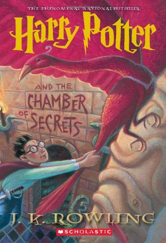

In this book Harry discovers he has magic and attends Hogwarts for the first time.

In this book Harry returns to Hogwarts where students begin to mysteriously be petrified throughout the school. Turns out it was just a big snake that can simly be killed by stabbing it. Also, phoenix tears have magical healing abilities.
In this book Serious Black escape Azkaban, presumably to kill Harry. Just kidding, he wants to be his new dad!